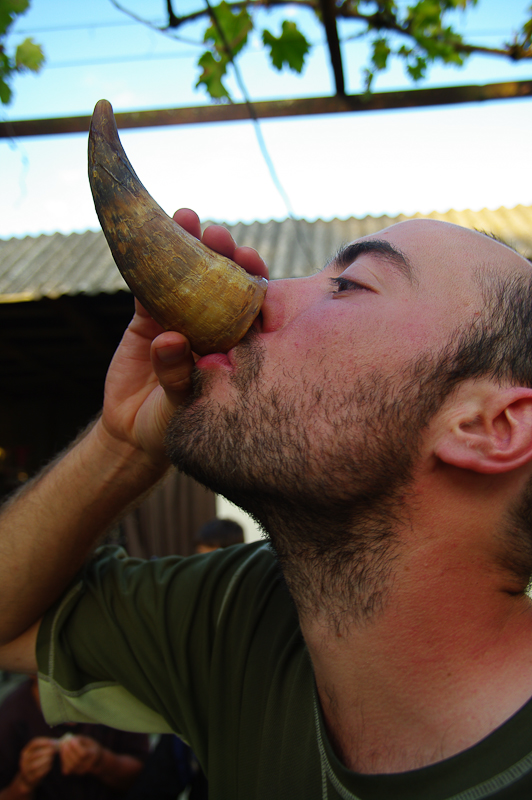

La Géorgie: boire où ne pas boire?
La tradition de la table est au coeur de la société géorgienne et la consommation d’alcool est elle même au coeur de cette tradition. Dès lors si vous voyager de village en village, au plus près de gens vous serez forcément amener à découvrir le “Gaoumardjos” cette tradition du toast qui accompagne chaque repas, chaque invitation.
Sachez qu’il très difficile voir impossible de refuser de se faire servir à boire. L’astuce consiste à accepter le verre, de participer au toast et au moment fatidique là où tout bon géorgien finira son verre cul-sec de se contenter de tremper ses lèvres dans la boisson. Personne ne serra dupe mais vous aurez jouer le jeu et cela satisfera amplement vos hôtes.
Cependant si tout comme nous vous vous adonnez pleinement à ce pan de la culture géorgienne vous finirez un nombre incalculable de fois totalement bourré. Dès lors des règles de prudences générales s’impose car comme en France, le comportement de certaines personnes peut changer du tout au tout lorsqu’ils sont ivres. Il est très inconfortable, de se trouver dans une situation ou votre hôte d’un soir devient vindicatif, balbutiant des phrase imprécises en s’énervant d’avantage en se rendant compte que vous ne le comprenez pas.
Nous avons été confronté à cette situation et, de manière générale, nous acceptons volontiers les invitations à boire une bouteille de tchatcha si les hôtes sont plusieurs et entourés de leur famille. Les femmes consomment peu ou pas d’alcool et sont capable de raisonner leur maris en cas de débordement. Il convient toutefois de tempérer cette mise en garde. En effet, en près d’un an passe dans ce pays, nous n’avons été dans cette situation désagréable qu’une seule fois et, parallèlement, nous avons fini de nombreuses soirées totalement ivre, dans une ambiance bon-enfant et festive. L’étranger a, dans tout le pays, une image d’idole et les gens se feront un plaisir de vous accueillir, pour le peu que vous connaissiez deux ou trois mots de géorgien, à commencer par le fameux “gaoumardjos” qui clôture solennellement chacun innombrable toasts portes pendant les repas.